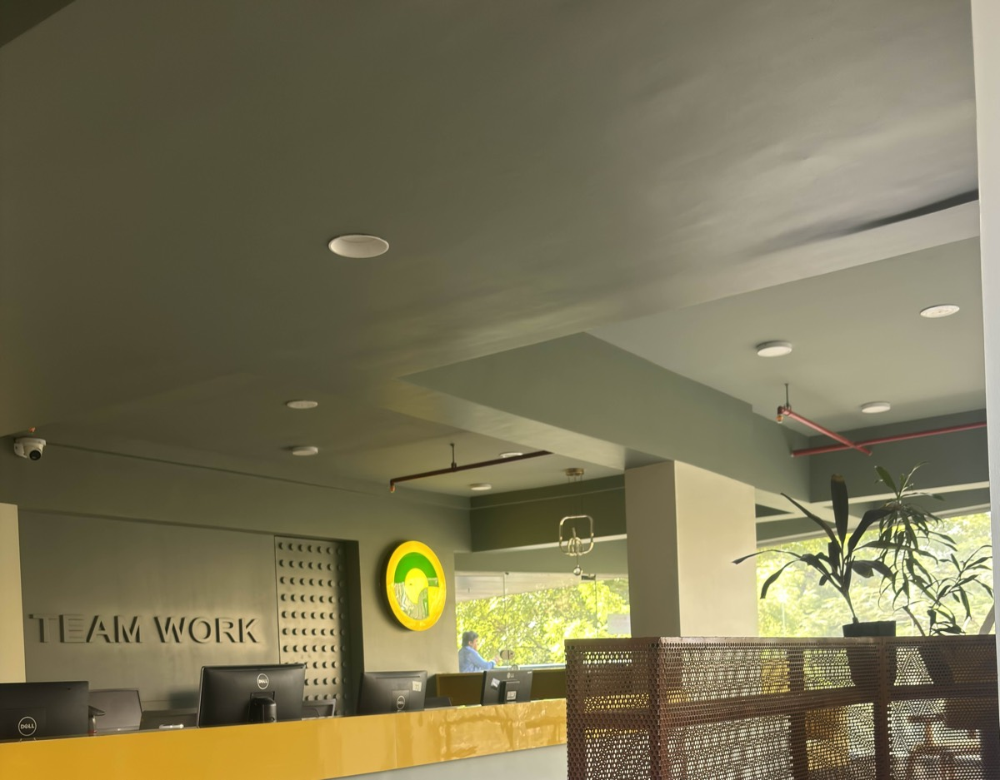
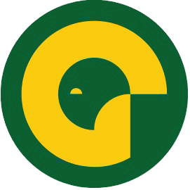
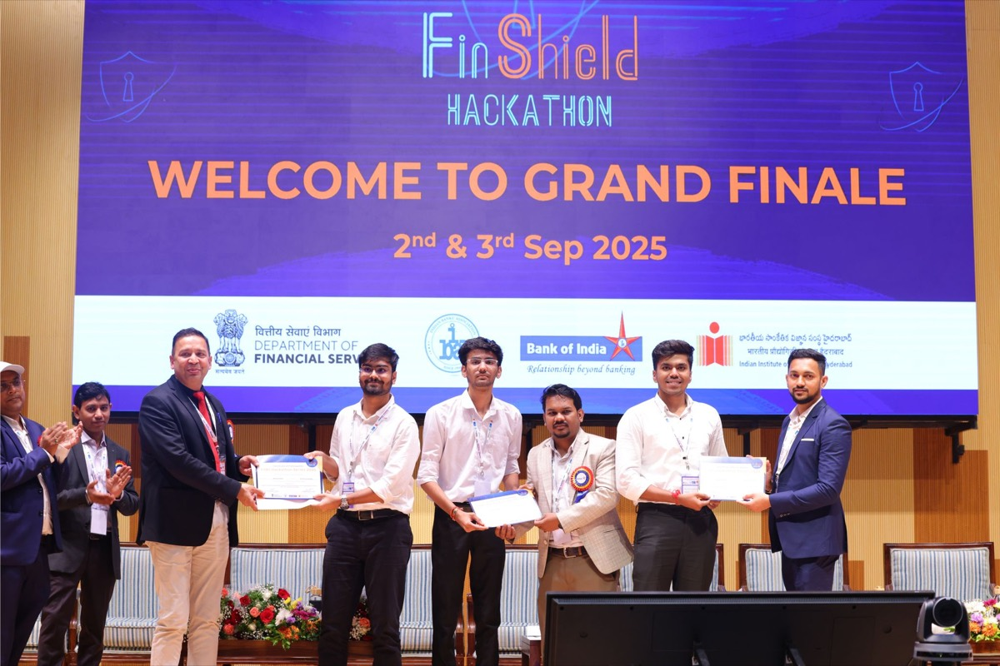
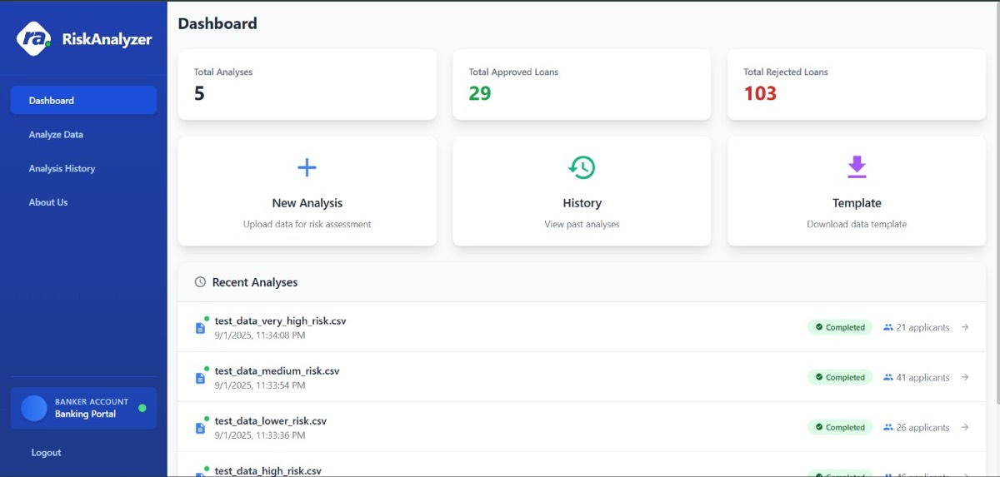
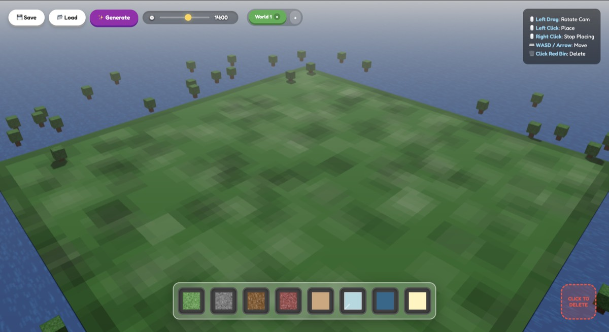
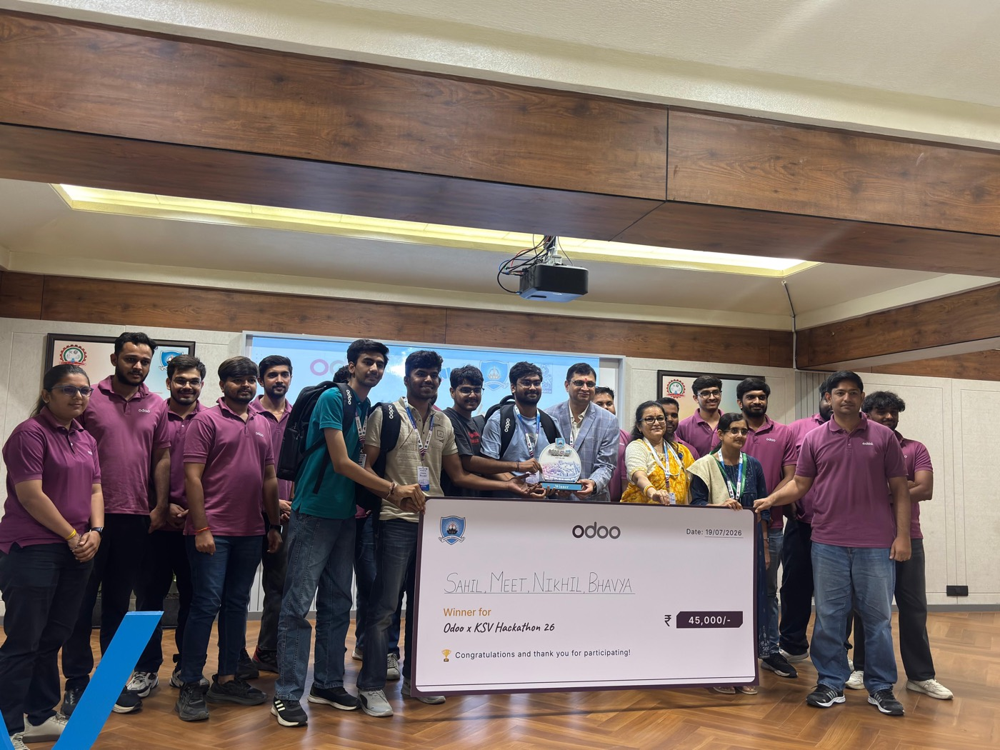
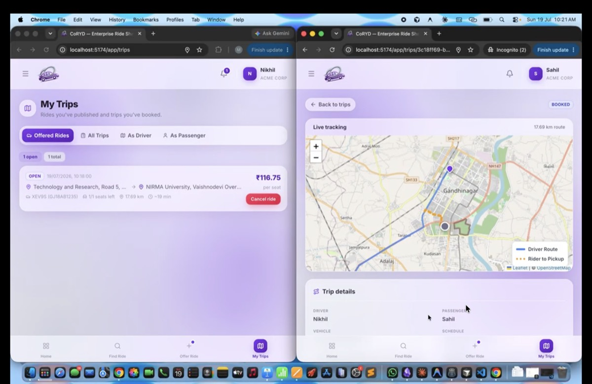
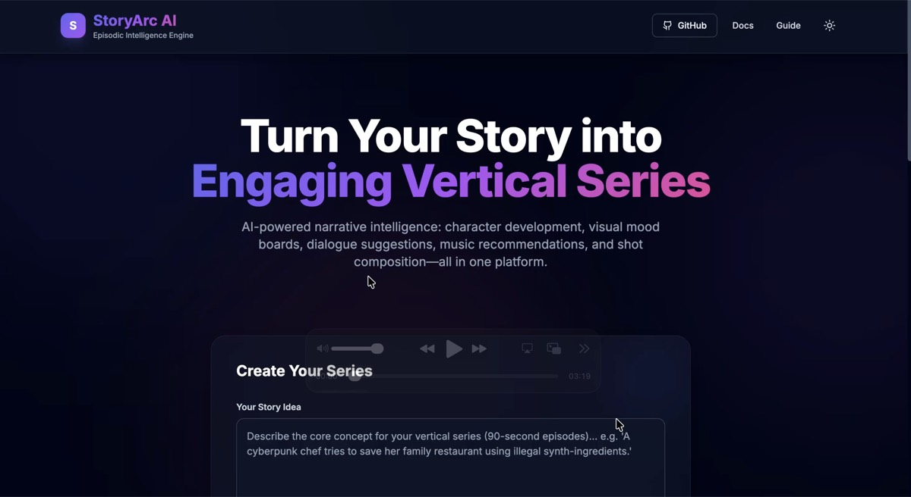
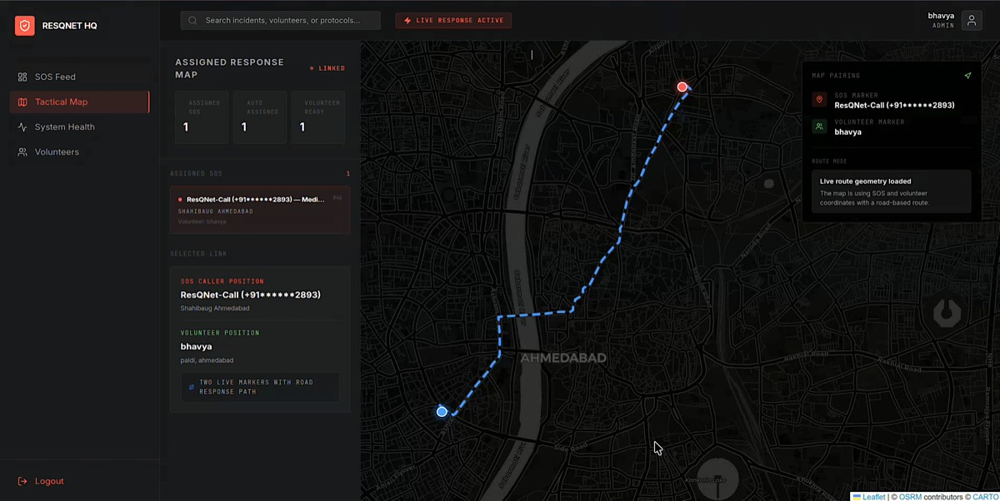

Summer Intern at Ford Motor Company
Sanand Engine Assembly Plant (SaEP), Gujarat • June 2026 – July 2026
I spent two months as a Summer Intern at the Ford Sanand Engine Assembly Plant, working on
AI in MOS — a forecasting platform that brings machine and material planning together
into a single interface for the plant floor.
The problem
Spare-part planning at the plant lived across a pile of disconnected Excel files: transaction
histories per year, an item master, purchase orders, a categorisation map. Restocking decisions got
made after stock hit a critical threshold, which meant machine downtime and expensive rush
freight. The forecasting that did exist was a simple moving average — which is exactly the wrong
tool for spare parts, because their demand is intermittent. A part used twice a year gets smeared
into "0.17 per month" and the number stops meaning anything.
Project 1 — Predictive Maintenance
Time-series models over historical machine sensor data, flagging likely failures before they
happened so maintenance could be scheduled instead of reacted to.
Project 2 — Spare-Parts Demand Forecasting
No single algorithm forecasts spare-part demand well, so this one runs an ensemble and blends by
each item's actual historical pattern:
- Croston's method — built for intermittent demand; it separates demand size
from the gap between demands instead of averaging the two together.
- Holt's linear trend — extrapolates a rising or falling trajectory forward.
- XGBoost and Random Forest — pick up non-linear structure from
lag features, rolling means and year-over-year trends.
- Ridge regression — a stable regularised baseline to keep the ensemble honest.
- Isolation Forest — unsupervised anomaly detection that flags spikes, dropouts
and erratic usage across the whole SKU catalogue.
On top of the forecast sits a restock urgency matrix that scores each part 0–100
from stock on hand, safety stock, lead time versus days of stock remaining, daily consumption
velocity and open purchase orders. Purchase-order data also feeds spend and supplier-concentration
analytics.
Engineering it for the shop floor
The whole thing ships as a Plotly Dash app. Files are classified by inspecting their column headers
rather than their filenames, so nobody has to remember a naming convention. Uploaded data is held
in memory and never written to disk. Model training runs in a background daemon thread behind a
lock, so the UI stays responsive with a live progress bar instead of freezing for minutes.
Working inside a live manufacturing environment taught me how much of applied ML is really about data
plumbing, domain conversations with the people who run the machines, and building something the shop
floor will actually open every morning.
Full-Stack Developer Intern at Growthify
Growthify • July 2026 – Present


At Growthify I'm building a multi-franchise CRM and admin platform — the system a
franchise network runs its whole operation on: leads, quotations, invoices, payments, orders,
customers, inspections, HR and audit trails.
One straight line, three layers
React + Vite → FastAPI → Supabase Postgres. No ORM, no queue, no service mesh in between. The
frontend talks only to the backend; the backend is the only thing that touches the database.
Business logic lives in the database
Every business rule is a Postgres usp_* stored procedure. The FastAPI service — 186
endpoints across 20 feature areas — is a thin typed layer that validates input, applies auth, and
calls those procedures over Supabase RPC. Every table has RLS on with no policies, so only the
server-side service_role key can read anything; the browser never gets near it.
Screens as configuration, not code
Twenty master screens plus the transaction screens are declared as data and rendered by shared
components, so adding a screen is a config entry rather than a new page. Two things fall out of
that:
- Permissions everywhere, for free. A role → module → action matrix over a
16-action vocabulary decides whether each Add / Edit / Status / Export control renders at all —
not just whether it errors when clicked.
- No hard-coded copy. Every user-facing string comes from a message catalogue in
the database, so wording and localisation change without a redeploy.
What I've taken from it
The interesting lesson has been how much leverage you get from deciding where a rule lives.
Putting business logic in the database and screens in config means the surface you actually
hand-write stays small even as the product keeps growing — which is the opposite of how these
admin platforms usually age.
FinSheild Hackathon 2025
Bank of India & IIT Hyderabad • Top 9 Shortlisted



Participating in the FinShield Hackathon 2025, organized by the Bank of India in collaboration with IIT Hyderabad, was an incredible journey. Out of 661 applicants, only 72 teams were shortlisted for the final presentations. Our team developed RiskAnalyzer, a predictive machine learning system designed to analyze credit default probabilities using non-traditional utility data.
Throughout the event, we collaborated on building robust predictive models and designing an intuitive, real-time dashboard. Being recognized in the Top 9 was a huge milestone that validated our efforts in alternative risk assessment.
Odoo x KSV Hackathon 2026
Odoo & KSV University • Winner


Winning the Odoo x KSV Hackathon 2026 was the biggest result of the year for us. Starting from 836
registered teams, 72 teams from 17 states made it to the final round — and we took first place with
CoRYD, walking away with ₹45,000 from Odoo and ₹1,00,000 from KSV.
CoRYD is a multi-tenant ride-sharing platform built for organizations. Employees can find rides,
offer rides, track trips live on a map, chat or voice-call the other participant, and settle fares,
while a company-admin console gives oversight and reporting across the whole tenant.
The hard parts were tenant isolation, live location streaming that stayed cheap, and fare settlement
that both riders trusted. Shipping all of it inside a hackathon window made this one of the most
intense builds I've been part of.
Hack-a-Mind Hackathon 2026
Nirma University & SUNY Binghamton • Runner Up


At the Hack-a-Mind Hackathon 2026, sponsored by Pet Pooja and Quantloop.tech, our team won the Runner Up title and secured a track prize. We designed StoryArc AI, an episodic narrative generation engine powered by Google Gemini AI, designed to analyze and format vertical 90-second mobile show episodes.
We built Gemini integrations, optimized structure layouts, and fine-tuned generation heuristics. It was a fast-paced coding sprint that taught us how to prototype generative tools under high pressure.
Dotslash 9.0 Hackathon 2026
SVNIT Surat • Grand Winner
Winning the Dotslash 9.0 Hackathon organized by ACM NIT Surat was one of the highlight moments of the year. Competing with 800+ teams and 2,400+ participants across India, we developed ResQNet, a Web3-enabled collaborative emergency management and dispatch portal linking disaster survivors to dispatch centers and local volunteer responders.
We designed full-stack geocoded map integration, smart contract integrations, and robust real-time communication bridges to bypass centralized dispatch limitations during grid blackouts. Winning first place was an unforgettable team accomplishment.
TinyML-Based Smart Grid Research
15th International Smart Grids Conference • Published Paper
This research paper, titled "TinyML-Based Trojan Detection Framework in Smart Grid Systems", was accepted and published at the 15th International Smart Grids Conference (2025). The project focuses on deploying hardware-constrained TinyML classifiers onto edge power nodes to intercept and neutralize network Trojan injections in real time.
We proved that lightweight neural networks can successfully detect malicious anomaly patterns at the edge without introducing power or latency overhead to critical grid infrastructures.
Collaborative Drone Navigation (RL)
Preprint Research Paper
Our preprint paper, "Machine and Reinforcement Learning-Based Collaborative Framework for Drone Navigation in Battlefield Environment", outlines a multi-agent deep Q-network strategy to optimize drone swarm search paths and collision avoidance profiles under simulated radar jamming scenarios.
We designed reward schemes that encourage mutual coordination and battery preservation constraints, yielding resilient swarm formations compared to classic target-pursuit algorithms.